Week 8 — NP-Completeness & Reductions
2026-07-06 → 07-12 · Modules NP1 (NP, Reductions), NP2 (3-SAT), NP3 (Graph Problems)
Due this week
| Item | Type | Note |
|---|---|---|
| HW8 | written | reductions |
| Quiz 6 | format | NP answer format |
Watch the lecture (NP & Reductions)
Learning objectives
- Define P, NP, NP-hard, NP-complete precisely.
- Build a polynomial-time reduction A≤pB in the correct direction.
- Know the standard NP-complete catalog and how the problems reduce to one another.
- Write a four-part reduction proof.
Core concepts
Decision problems & certificates
Definition. Complexity classes here are defined over decision problems (yes/no output). A certificate is a candidate solution; a verifier checks it.
The classes
- P — decidable in polynomial time.
- NP — problems whose yes-instances have a polynomial-size certificate that a verifier can check in polynomial time. (e.g. for SAT: a satisfying assignment.)
- NP-hard — at least as hard as everything in NP: every A ∈ NP reduces to it (A≤pB). Need not itself be in NP.
- NP-complete — NP-hard and in NP. The "hardest problems in NP"; if any one has a polynomial algorithm, then P = NP.
P ⊆ NP, NP-complete = NP-hard ∩ NP.
Polynomial-time reduction
Definition. A≤pB means: a polynomial-time map sending each instance x of A to an instance y of B such that
x ∈ A ⇔ y ∈ B.
Intuition: "if I could solve B, I could solve A" — so B is at least as hard as A.
Reduction DIRECTION — the #1 exam trap
To prove B is NP-hard, reduce a known NP-hard problem A to B (i.e. A≤pB):
Reduce FROM known-hard TO your target.
A reduction the wrong way (B≤pA) shows B is easy if A is — it proves nothing about B's hardness.
Algorithms (proof patterns)
A reduction proof has 4 parts
- The map — describe the polynomial-time construction x ↦ y.
- (⇒) If x ∈ A then y ∈ B (yes maps to yes).
- (⇐) If y ∈ B then x ∈ A (yes only comes from yes) — usually the harder direction.
- Poly-time — argue the construction runs in polynomial time.
Key theorems & results
Cook-Levin
3-SAT (satisfiability of a CNF formula with exactly 3 literals per clause) is NP-complete — the root of the reduction tree. Cook-Levin shows every NP problem reduces to SAT; from SAT/3-SAT we then reduce outward to graph problems.
Standard catalog
| Problem | Reduce from | Key idea |
|---|---|---|
| 3-SAT | SAT (Cook-Levin) | the root NP-complete problem |
| Independent Set (IS) | 3-SAT | a triangle gadget per clause + variable-consistency edges |
| Vertex Cover (VC) | Independent Set | S is an IS ⇔ V \ S is a VC |
| Clique | Independent Set | clique in G ⇔ IS in the complement Ḡ |
| Hamiltonian path/cycle, TSP | 3-SAT / others | gadget constructions |
These complementary identities (IS ↔︎ VC ↔︎ Clique) are worth memorizing — they're one-line reductions that show up constantly.
Worked example (Independent Set ≤ₚ Vertex Cover)
Claim: G has an independent set of size ≥ k ⇔ G has a vertex cover of size ≤ n − k.
- Map: identity on the graph; just ask VC for threshold n − k. (Trivially poly-time.)
- (⇒) If S is independent with |S| ≥ k, then no edge has both endpoints in S, so every edge has an endpoint in V \ S — i.e. V \ S (size ≤ n − k) is a vertex cover.
- (⇐) If C is a vertex cover with |C| ≤ n − k, then V \ C has no internal edge (every edge is covered by C), so V \ C (size ≥ k) is independent.
Since VC is in NP and this reduction is from the NP-hard IS, VC is NP-complete. ◼
Common pitfalls / exam traps
- Wrong direction — reducing your target to a known-hard problem proves nothing.
- Forgetting the (⇐) direction — both directions of the iff are required.
- Confusing NP-hard (maybe not in NP) with NP-complete (in NP and NP-hard).
- Treating NP-complete as "unsolvable" — they're solvable (exponentially), just not known to be poly-time. (Contrast next-unit undecidability: no algorithm at all.)
How to answer (HW / exam)
A reduction answer has the 4 parts above. Always reduce from a known-hard problem (usually 3-SAT or one of the catalog), give both directions, and argue poly-time.
Go deeper — readings
Comprehensive Notes
NP0: NP Completeness
This section deals with the classification of algorithms based on efficient runtimes. The run time to compute a solution, as well as the run time to verify a solution. Although this may seem like a simple division it turns out that in many cases it's difficult if not impossible to determine the runtime. In such cases determining if an efficient can exist is an even harder ask than it seems.
First, some definitions:
- Efficiency: for an algorithm to be efficient this means that, at a minimum, the runtime is bounded by a polynomial function on the input size — ie there exists a c for which the runtime is O(nc).
- P — in this section refers to polynomial
- this is the set of search/decision problems that can be solved in polynomial time
- NP — in this section refers to nondeterministic
polynomial
- this is the class, or set, of all search/decision problems where the solution can be verified in polynomial time
- some literature uses decision rather than search; this is a rather minor, insignificant distinction
- NP includes P for computable problems, such as those we've looked at up until now
An alternative way of thinking of a nondeterministic problem: it's one where you're allowed to just guess at each step, in order to arrive at an accepting state.
The open question. Is P ≠ NP or is P = NP? This is an outstanding question that the best mathematicians have yet to solve.
The topic of P and NP can be difficult to understand, so hopefully these examples help.
Consider the game of chess. Suppose that I presented to you a game with a well defined placement of pieces and told you the next best move is Y. How would you verify the correctness of Y? There are just so many different 2nd 3rd etc etc moves that computing all possible outcomes is challenging. This is an solution that cannot, in general, be verified in polynomial time. It's outside NP.
Consider a Rubrik's cube, with only 6 sides and 9 squares per side, it is within our grasp to prove that given a rubik's cube in any state, it is solvable in polynomial time. This is considered to be an NP-Complete problem, for a 3x9 cube. However it has also been shown that for a more general NxNxN...xN cube this becomes intractable.
In the following sections we will look at the following topics
- NP & NP-complete reductions
- NP-Completeness (3SAT, Graph Problems, Knapsack)
- What does NP-completeness mean?
- What's P = NP and P ≠ NP mean?
- How do we show that a problem is intractable, meaning it is unlikely to be solvable in an efficient manner.
More Definitions
Search Problem:
Can be loosely defined as a problem where the solution can be verified efficiently
- given a solution you can verify the solution in polynomial time
- time to generate a solution is irrelevant
- NP = class of all search problems
- P = class of all search problems that can be solved in polynomial timeIt should be pretty clear that P is a subset of NP, P ⊂ NP
More formally a Search problem is defined as
First it has to be of the form
- given an instance I
- find a solution S for I if one exists
- output No if I has no solution
Secondly it has to meet the following requirement
- If given an instance I and a solution S
- then S can be verified to be a solution to I in polynomial-time ( polynomial in |I| )
Note that S need not be a correct solution, it could be wrong, it still must be verifiable in polynomial time
P = NP means that it is as difficult to solve a problem as it is to verify the solution. I feel that it is important to point out that this is talking about problem in the general tense. ie a Class of problem. Not any particular instance or example of a problem. For most of the problems considered so far solution verification is considerably easier than solution discovery. But equality would also imply the reverse. So if a solution can be verified in polynomial time then it can be solved in polynomial time, and this turns out to be impossible to prove. This has lead many to say that P ≠ NP. Which allows for P implies NP, and doesn't require NP implies P. Unfortunately this is not all that easier to prove either.
NP1: Intro and Examples
Most proofs of being NP tend towards being short and crisp, and quite trivial to be frank.
SAT Problem
Recall that we first introduced the SAT problem back in section GR2, where we looked at the 2-SAT problem.
SAT (Satisfiability).
- Input: a Boolean formula f in CNF form, with n variables and m clauses.
- Output: a satisfying assignment of variables if one exists, else No — where an assignment gives a True/False value to each of the n variables s.t. the formula f evaluates to True.
Here's another example
$f = (x_3 \vee \bar{x_2} \vee
\bar{x_1})\wedge(x_1)\wedge(x_2 \vee \bar{x_3})\wedge(\bar{x_1} \vee
\bar{x_3})$
Rest assured this formula has a solution and we'll leave it as an
exercise to find a solution to this
Suppose we provided you with a solution to this. How long would take to verify the correctness of the solution? Pretty quick I would hope for such an easy problem instance.
Let's generalize this type of problem. Suppose we provided you a formula f and an assignment of values to variables x_1,...,x_n. What would be the runtime of verification? For m clauses this would have a worst case of O(nm). O(n) for verifying that a clause is satisfied, then multiplied by m clauses. Since n x m is polynomial in the input size, this proves that SAT is in NP.
K-Colorings Problem
- Input: undirected G=(V,E), and integer k > 0
- Output: Assign each vertex a color in {1,2,...,k}
- s.t. no edge has the same color at it's endpoints, adjacent vertices are of different colors
- No, if the proper coloring doesn't exist
What would it take to verify that for a given G and a coloring that the assignment is valid? Pretty easy when you consider that this boils down to an edge having ends of different colours. So we iterate through the m-edges and check colour(v) ≠ colour(w). This should take no more than O(m). Which of course means that K-Colouring ∈ NP.
MST Problem
- Input: G=(V,E) with positive edge lengths
- Output: Tree T with minimum weight
Is MST∈NP? what about P, is MST∈P?
First notice that a solution is guaranteed, unlike in our previous example problems which could return No if a solution didn't exist. So we will always have a tree.
Second, suppose we're given the graph G and the tree T. First we can run DFS/BFS to verify that T is in fact a tree. Recall that these run in O(|V|+|E|). Second we can run Kruskal or Prim to verify that T is of min weight. The weight of the Tree T given to us must be of the same weight as T' that is returned by prim/kruskal. It doesn't have to be the same tree with the same edges. Only the weight matters. Further, these both run in linear time so we can conclude that verifying MST can be done in Polynomial time. This concludes the proof of MST∈NP.
Now we move on to proving that MST∈P. This of course is trivial as we've already proven that both Kruskal and Prim can compute/determine a min tree in O(m log n). Thus a solution can be found in polynomial time and thus MST∈P.
Knapsack Problem
- Inputs: capacity B, and n objects with integer weights w1, ..., wn and n integer values v1, ..., vn
- Outputs: subset S of objects with a total weight≤B, and max total value
- Note: recall that there are two variants of this problem, with and without repetition
Is KP∈NP? what about P, is KP∈P?
It's in neither! recall that the runtime of KP is O(nB) and we talked about why this is not efficient. It turns out that O(nB) is actually exponential.
To prove in NP we need to prove that the capacity is less than B and that the values are at a max. Proving the capacity statement is rather trivial. Proving the max value is a bit trickier. For this problem we don't have a graph representation. All we have is a DP method that takes exponential time. So we have no way to verify the solution in polynomial time.
You might be thinking well if KP∈NP is false then KP∉NP is true, but this wrong. Frankly we don't know if there exists an algorithm to check the solution in polynomial time, but we also cannot rule it out. So we're like Shrodeingers cat, we can say which is true. Similarly there may exist an algo that finds the max subset in polynomial time, but until the day it's announced to the world neither KP∈P nor KP∉P are true.
Let's consider a small adjustment to the above. What if instead of maximizing the value we wanted to achieve a value V.
Knapsack-Search Modified Knapsack
- Inputs: capacity B, and n objects with integer weights w1, ..., wn
and n integer values v1, ..., vn
- and a goal g
- Output: subset S of objects with
- total weight ∑i ∈ Swi≤B,
- and total value ∑i ∈ Svi ≥ g (previously we tried to maximize sum)
- No if no such subset S exists
Suppose for a moment we could solve this in polynomial time. If this were true then we could theoretically run a binary search on g to find the maximum. This begs the questions how many rounds of binary search would we need to perform to converge to an optimal value? Well the maximum possible of V is just the sum V = ∑vi. So this implies a runtime of O(log V). So is this in NP? Yes! we can prove that now.
Let's assume that we're given the weights and values, a capcity B, a goal g, and a Solution S. To check this solution we need to check the conditions: (1) total weight ∑i ∈ Swi≤B, and (2) total value ∑i ∈ Svi ≥ g. We're just summing up at most order numbers which can be done/checked in O(n) time. We can check a proposed solution in polynomial time and thus this version of knapsack is in NP.
You may ask, "Does this really take O(n) time to some of these numbers?"
Well, if you really look at it in terms of the magnitude of these numbers, we had capital V as the sum of all values. That's led capital W to note the sum of all weights. Certainly to add up to these numbers, the time required is at most the number of bits. The number of bits in each of these numbers is at most log of capital W. So the time required to compute this sum is the most order n times log of capital W. To compute this sum is the most O(n log W). Since the input side is log W and log V, this is still polynomial in the input size.
Intuition
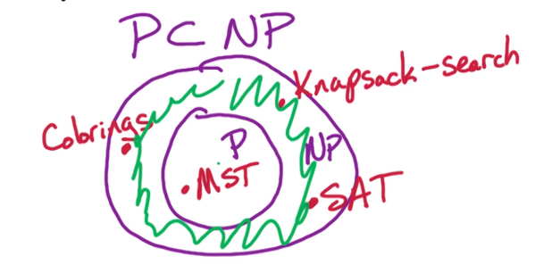
Now that we've looked at several we should be good to go a bit deeper.
The donut area problems are generally called NP-Complete. These are problems that can be verified in polynomial time, but they cannot be solved in polynomial time. They are also known as the hardest problems in NP, you think of these as the outermost layer of the donut.
Consider:
- if P ≠ NP then all NP-Complete problems are not in P
- the complement / or negation of this is
- if a NP-Complete problem can be solved in poly-time then all problems in NP can be solved in poly-time
What does it mean to be NP-complete?
Consider the SAT problem from before. Recall from the previous section we demonstrated that 2-SAT is in NP, and we generalized this to show that SAP is in NP as well. Is SAT NP-Complete?
A Problem is NP-Complete if it meets the requirements
- 1 - it is in NP
- 2 - it is the hardest problem in NP
- This means it is the least likely to have an efficient solution
For example if we use the SAT problem then "SAT is NP-Complete" means that SAT is the hardest problem in NP, which in turn means that If we can solve a problem like SAT in poly-time then this we can solve every problem in NP in poly-time. This would imply that there is what's called a reduction, from any problem in NP to SAT. ie MST, Colorings, TSP are reducible to SAT. Of course the reader is reminded that the reduction is an implication of being NP-Complete. See the visual below, Conversely if P ≠ NP then of course SAT ≠ P. At this time there is no known polynomial time algo for SAT, there is also no known proof that P ≠ NP. So we're in a bit of a limbo.
Let's look at how reduction works. Suppose we have problems A & B. For arguements sake think of A as the coloring problem and B as the SAT problem. We want to show/prove the reduction from A to B, denoted A → B or A ≤ B. This is read B is at least as computationally hard as A. It means that when we show a reduction from A to B, we're showing that B is at least as hard computationally as A. So if we can solve B then we can solve A.
Formally:
- Both A → B read
as A reduces to B, or as reduction from A to B
- and A ≤ B : B is as least as Hard as A
- Are equivalent, and mean the same thing
- Both means that if we can solve problem B in polynomial time then we can use that algorithm to solve A in poly-time.
Now let's look at the mechanics of the reduction:
- Suppose there is a poly-time algo for SAT,
- we will use this like a black box to get a poly-time algo for the Colorings problem.
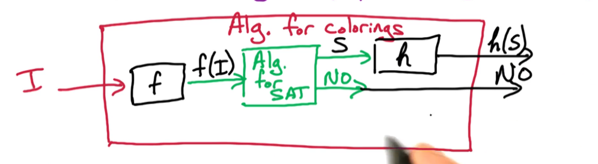
Let's go through this model. I represents the input Instance for the problem, so let's Say we're working with a coloring problem. This would be a graph G and integer K, so we need a function f that can transform these into the appropriate input for SAT, which you may recall is a boolean set of assignments. In short F(G,k) is the input for SAT.
Then SAT can do it's thing, we need not concern ourselves with what it's doing. And it spits out it's response. The No is trivial, but when we a solution S it will be in the form that SAT operates under. Consequently this will again need to be transformed back to the form that would represent a solution to the initial problem, Colorings.
a) f(Colorings Input) → f(G,K) input
for SAT
b) Solution to f(G,k) S → h(S) solution
for Colorings
We will need to prove that
- if S is a solution to f then h is a solution to the original G,k
- Also if there is no solution to f then there is no solution to the original G,k
- This means that we need both directions
- S is a solution to f(G,k) ⇔ h(S) is a solution to (G,k)
Another Example
To show that Independent Sets (IS) problem is NP-Complete
Need to show that
- a) IS ∈ NP
- b) ∀A ∈ NP, A → IS
- note that this has to hold for all problems in NP,
Suppose we know that SAT is NP-Complete, then we have that ∀A ∈ NP, A → SAT
We want to show that SAT → IS
Then: by composition A → SAT → IS
T/f : by transitivity A → IS
In summary
Suppose we have a problem that is known to be NP-Complete (like the
supposing above)
Then to show the IS problem is NP-Complete
Show that IS ∈ NP, just means show that it can be verified in poly-time
Show that SAT ∈ NP, we can replace SAT with any known problem that is NP-Complete
Then we've shown that A → SAT → IS
NP2: NP-Complete Proofs - Pt1
In this section we will illustrate an example of an NP-completeness proof. We will do prove that the 3SAT problem is NP-Complete. In doing so we will make use of the fact that SAT is NP-Complete, which was first proven by Steven Cook & Leonid Levin in 1971. Incidentally, after Cook & Levin proved SAT NP-Completeness, Dick Karp in 1972 used it to prove that another 21 problems were also NP-Complete. We will look at a few of these problems, beginning with 3SAT.
3SAT NP-Complete
Recall the parameters of the 3SAT Problem
- Input:
- Boolean formula f in CNF form
- n variables and m clauses
- each clause may contain at most 3 literals ( ≤ 3)
- Output:
- No, if no satisfying arguements exist
- else the satisfying assignment,
- where an assignment is a set of boolean, or true-false, values for n variables
The goal of our proof is to show
- 3SAT ∈ NP
- SAT → 3SAT, Thus ∀A ∈ NP, A → 3SAT,
Part 1 To prove that 3SAT ∈ NP we show that for a given Solution S, in this problem S is a satisfying assignment, that we can verify the solution in polynomial time. To this end suppose we are given a CNF formula f and an assignment x1, x2, ⋯, xn. We will go through each of the m clauses, and check if at least 1 literal in the clause is satisfied. This takes O(1) as each clause is limited to 3 literals. Thus to check all m clauses will require at most O(m) time. This is poly-time so our proof is complete.
Part 2 Now let's see how we can reduce the 3SAT
problem.
Recall
- We need to find an f' such that f' maps the input from a SAT problem to a 3SAT problem.
- We also need to find a σ′ that maps the output from the 3SAT problem back to σ, the solution to a SAT problem
- and of course
- σ′ satisfies f' ⇔ σ satisifes f
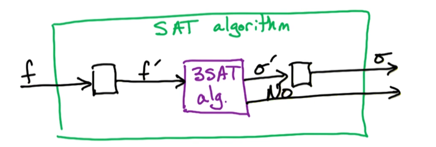
How do we find f'? f is the input to SAT and may very well contain clauses w more than 3 literals. So our f' must be able to transform any number of literals into clauses of at most 3 literals. Let's look at an example to see how we may transform
Consider f = $(x_3) \wedge (\bar{x_2} \vee x_3 \vee \bar{x_1} \vee \bar{x_4}) \wedge (x_2 \vee x_1)$
- f contains a clause with 4 literals and so cannot be fed directly into a 3SAT algo
- clauses 1 and 3 are valid so we can leave them as is
- for clause 2
- create a new variable y, and partition the clause as follows
- $C'_2 = (\bar{x_2} \vee x_3 \vee y) \wedge (\bar{y} \vee \bar{x_1} \vee \bar{x_4})$
- replace C2 with C2′
- we claim that these are equivalent
- Claim: C2 is satisfiable ⇔ C2′ is satisfiable
- It follows then that if our claim is true then our formulas are also equivalent, and we have found our f' since the replacement of clauses would lead to an input that is valid for 3SAT
We must prove our claim in order to move forward
Claim
- $C_2 = (\bar{x_2} \vee x_3 \vee \bar{x_1} \vee \bar{x_4})$
- is equivalent to
- $C'_2 = (\bar{x_2} \vee x_3 \vee y) \wedge (\bar{y} \vee \bar{x_1} \vee \bar{x_4})$
Forward C2 ⟹ C2′, take a satisfying assignment for C2
- if x2 = F or x3 = T, then we take y=F, we choose y to satisfy the other clause
- if x2 = F or x3 = T, then we take y=T, again we choose y to satisy the other clause
- In either case both clauses of C2′ are satisfied
Backwards: C2′ ⟹ C2, take a satisfying assignment for C2′
- if y=T, then clause 1 is satisfied. This implies that x1 = F or x4 = F, either case will satisfy C2
- sim if y=F, then clause 2 is satisfied. This implies that x2 = F or x3 = T, either case will satisfy C2
- In either case C2 is satisfied
We've shown both direction, and thus this completes the proof of our claim. However, we must generalize this for any clause where the number of literals is greater than 3.
Let's look at another example, this time with 5 literals
- let $C = (\bar{x_2} \vee x_3 \vee \bar{x_1} \vee \bar{x_4} \vee \bar{x_5})$
- This time let's create two new variables: y and z
- We will now find, or construct, C′ in a manner
- such that it is equivalent to the original
- and its clauses are each of size ≤ 3
- To this end we use
- $C' = (\bar{x_2} \vee x_3 \vee y) \wedge ( \bar{y} \vee \bar{x_1} \vee z)\wedge ( \bar{z} \vee \bar{x_4} \vee \bar{x_5})$
- what we've done here is create clauses using the original literals along with a replacement literal for the overflow terms
To prove that C ⟹ C′ all you need to
- select a literal from C at random and observe the values in C′
- Then set the values of y and z accordingly.
To prove that C′ ⟹ C will require that we consider assignments of the new variables. Because of the 2nd clause which involves they are both assigned, and will imply values constraining the other two clauses
- Case 1: y=F
- Case 2: z=T
- Case 3: y=T and z=F,
Now what if our clause had k literals? We've seen so far that for k=4 we require 1 new variable, and we ended up with 2 clauses. For k=5 we needed 2 new variables, and created 3 new clauses. One may surmise that for k > 3 we will need k-3 new variables, and k-2 clauses.
Let's now consider a clause C of size k, ie a1, a2, ⋯, ak where each ai is a literal.
- first we will create k-3 new variables (y1, y2, ⋯, ak − 3)
- Second we replace C with k-2 clauses
- $C' = (a_1 \vee a_2 \vee y_1) \wedge (\bar{y_1} \vee a_3 \vee y_2) \wedge \cdots $
- $\cdots \wedge (\bar{y_{k-4}} \vee a_{k-2} \vee y_{k-3}) \wedge (\bar{y_{k-3}} \vee a_{k-1} \vee a_{k}) $
This will be our input to 3SAT, it defines a process or f' transformation that maps the input to a SAT problem to an input to the 3SAT.
Now we prove the C ⇔ C′
C ⟹ C′,
- Take an assignement of a1, a2, ⋯, ak that satisfies C
- Then ai = TRUE for some i
- So let ai be the min i where ai is satisfied
- Since ai = True
- we have that the (i-1)st clause of C' is also satisfied,
- we set y1 = y2 = ⋯ = yi − 2 = True to satisfy clauses 1 to (i-2)
- we set yi = yi + 1 = ⋯ = yk − 2 = False to satisfy the remaining clauses
C′ ⟹ C,
- Take an assignment of a1, ⋯, ak, y1, ⋯, yk − 2 that satisfies C'
- all we need to do is prove that at least one ai is true
- So let's assume that ai is false for all i, and just ignore the y's
- now we observe that
- clause 1: y1 is true since a_1 and a_2 is false
- clause 2: y2 is true since $\bar{y_1}$ is false and a_3 is false
- we keep going until the last clause
- clause k-2: $\bar{y_{k-3}}$ is
false because of the previous clause, and ak − 1, ak
are false by assumption
- this contradicts our initial supposition that a1, ⋯, ak, y1, ⋯, yk − 2 satisfies C'
- This means that a_i must be true for some i
- which in turns means that a1, ⋯, ak will satisfy C
So now that we have all our pieces we can design an algorithm to reduce SAT → 3SAT
- Consider f for SAT
- Create f' for 3SAT as follows
- for each clause C ∈ f:
- if |C| ≤ 3 then add C to f'
- if |C| > 3 then
- create k-3 new variables
- create c' as outlined above
- for each clause C ∈ f:
- output f'
Claim: f is satisfiable ⇔ f' is satisfiable
⟹: Given an assignment S satisfying f
- for each clause C in f
- if |C| ≤ 3 then C is also satified in f'
- if |C| > 3 then C' is also satisfied whenever C is satisfied (this was proven in preceding section)
- thus f' is also satisfied
⟸ Given an assignment S' satisfying f'
- for some clause C' in f' at least one of the literals in C is also satisfied, this was proven in the preceding section where we showed that if all of them were false we would end up with a contradiction
And that's all folks, we shown that: f is satisfiable ⇔ f' is satisfiable
Now we move onto finding σ′ which will transform the output of 3SAT back to the output for SAT. Luckily this turns out to be quite trivial. Simply ignore the new variables created by f'. That's all. The output from 3SAT still contains all the original literals so by ignoring them we end up with an assignment to the original variables. Which is what we need to verify.
Time Complexity One final thing to note is the size of f'. Recall that f has n variables and m clauses. So f' will have O(nm) variables and O(nm) clauses, since we added k-3 variables and k-2 clauses. Regardless these are both polynomial in the input size which is what matters the most.
Problems
- DPV 8.3 - Stingy SAT
- DPV 8.8 - Exact 4SAT (each clause has exactly 4 literals)
NP3: NP-Complete Proofs - Pt2
In this section we will look at some more examples of NP-completness proofs in particular those focused on Graph Problems.
- IS: Independent Sets
- IS Clique
- Vertex Cover
IS Independent Sets
Problem Definition
For an undirected graph G=(V,E), subset S ⊂ V is an independent set
if no edges are contained in S.
ie $\forall x,y \in S; \\ (x,y) \not\in
E$
It's easy to find trivial independent sets. The null set is an independent set, as is the set containing just a single node, a singleton vertex. We will be looking for the maximum independent set, the set with the largest number of vertices. Consider the below illustration. The red vertices are an independent set as there is no edge between any two vertices in red. Also note that adding any of the white nodes would create a dependency and the set would no longer be independent.
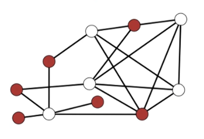
First, consider whether Maximum Independent Sets, MIS, is "known to be" in NP or not. If you guessed this to be false then you would be correct. Given a solution S there is no way to verify, in poly-time, that it is of max size without solving the source problem, ie running the base algorithm. This can only be done if P=NP. Recall that we encountered a similar situation when we examined the knapsack problem. Since we could not verify a maximum directly we took a search style approach where we verified that the solution value was less than a boundary value. We incremented the boundary value until we found no solution.
We will take a similar approach and reformat the MIS problem to the a more general IS problem:
Input : Undirected graph G=(V,E) and goal g
Output: Independent set S with size |S| ≥ g is one exists
: else No
Theorem: Independent Set problem is NP-Complete
It will be straight forward to show that this version of the problem is a search problem and t/f lies in the class NP.
Part 1: Recall that the first step is to show that the problem is in NP. This means that we must show that for a given solution S to the IS problem we can verify it's correctness in poly-time.
Suppose we're given the inputs G & g and a solution S. We can check each pair of vertices (x, y) ∈ S and verify if they are adjacent or not ie (x, y) ∉ E. This will require approx O(n2) time. Then we check that |S| ≥ g, which will require O(n) time. If both of these are true then we have verified the correctness of S, and we have done so in O(n2) time. This proves the claim that IS is in NP.
Part 2: Recall that the second step in an NP-Completeness proof is to show that the problem is at least as hard as every problem in the class NP. We take a problem that is known to be at least as hard as every other problem, like SAT or 3SAT, and we show a reduction to our new problem, IS. For this example we will use 3SAT as our known NP-complete problem and show it can be reduced to the IS problem. ie We prove 3SAT → IS
Recall that 3SAT takes a formula f with n variables and m clauses, where each clause is at most of size 3, ie |Ci| ≤ 3. IS is a graph problem with inputs G=(V,E) and a boundary g.
We first formulate a mapping h to transform the input to 3SAT into a graph G and boundary g. For the boundary we will take g=m, where m is the number of clauses and g is the upper bound on the max IS value, the size of the IS.
For each clause Ci, we create |Ci| vertices corresponding to each literal. Since we can have up to m clauses of size 3 we may have up to 3m vertices.
Clause Edges
Consider a clause of size 3, $C=(x_1 \vee
\bar{x_3} \vee x_2)$
We begin by creating a graph G with 3 vertices: $x_1,\bar{x_3},x_2)$, and we add an edge
between each pair of vertices.
- Observe that an Independent Set S has ≤ 1 vertex per clause
- but since g=m, our solution must have exactly 1 vertex/clause. This corresponds to the satisfied literal in the clause
Consider the following example, (NB the assignement here is random
and produces a contradiction. It is not a valid Solution to the cnf
formula on the left side.
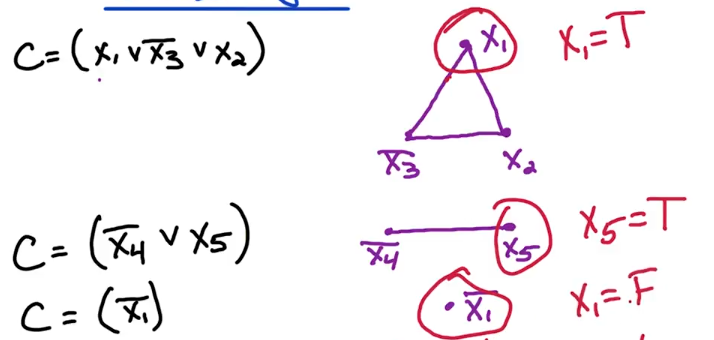
The above example can be further refined, by adding variable edges. This helps us to avoid invalid assignments that lead to contraditions.
Variable Edges
Consider the example above, add an edge between literals of the same
variable. In our case add an edge from x1 to $\bar{x_1}$.
- For all xi, add edge between all xi and $\bar{x_i}$
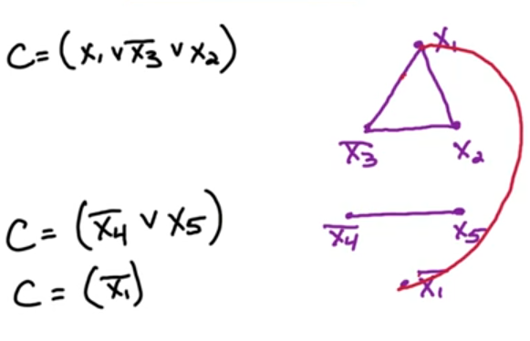
Here's another example which is more fulsome:
The first step is to write out the literals as nodes, in groups corresponding to clauses
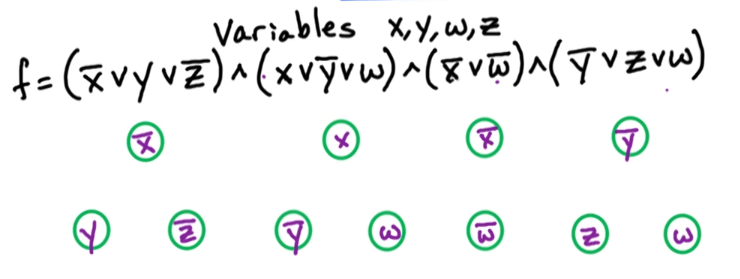
The next step is to connect the literals in a clause, these are our clause edges
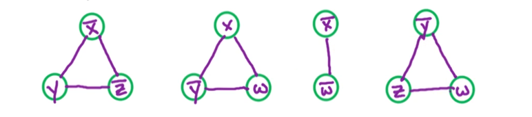
The next step is to connect literals to their negations, these are our variable edges
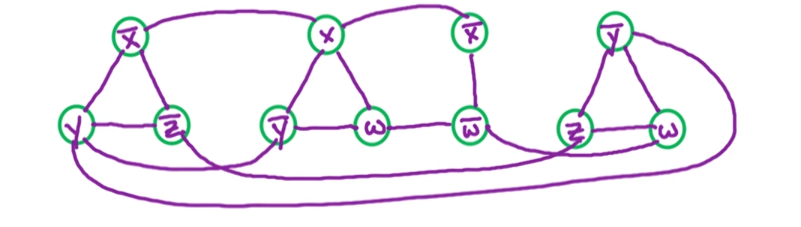
Let's take an example of an IS, of size 4, from this graph. We've circled the 4 vertices in red
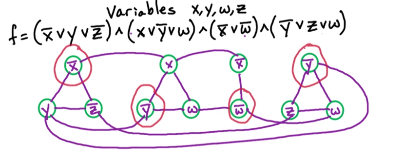
This leads to the assignment x=F,y=F,w=F,z=?. You'll observe that it doesn't matter what z is. Further more this assignment satisfies the original formula f. This observation can, and will, be generalized for our proof.
More formally:
- f has a satisfying assignment ⇔ G has an independent set of size ≥ g
Part 1 ⟹ consider a satisfying assignment for f, we will construct a graph G with an IS of size ≥ g.
- For each clause C, Take 1 of the satisfied literals. (f satified guarantees at least 1 satisfied literal in each clause)
- add the corresponding vertex to S
- Hence |S| will be of size at least m, (1 literal per clause * m clauses) and g = m - this proves S is of size ≥ g
Now we need to prove S is an independent set. Observe that S has exactly 1 vertex per clause & never contains both x & x̄. Together this means that
- S contains no clause edges (if it did there would be more than 1 vertex per clause)
- S contains no variable edges (if it did it would contain xi and $\bar{x_i}$ for some i)
Together this means there are no edges in S, So S is an IS. and because S is of size ≥ g = m. We have proven that G has an independent set of size ≥ g. Now we move to the inverse direction
Part 2 ⟸ Consider an independent set S of size ≥ g, and g=m. Then S will have exactly 1 vertex per clause. Each vertex corresponds to a literal in f so we set the corresponding literal to True. This means that every clause is will be satisfied and thus f is satisfied. But this doesn't mean that it is guaranteed to be a valid assignment. For that we note that there are no contradictory literals since there are no variable edges in S. This guarantees a valid assignment.
Together this proves that a reduction from 3SAT to IS is correct, and it shows how to take an IS and construct a Satisfying assignment. This completes our proof
Now Let's take a moment to go back to consider what this means to our original problem. Recall that when we began our discussion we considered the MAX independent set problem which is an optimization problem. We modified this to a Search problem by taking g=m rather than try to optimize g.
In our proof above we have shown that IS is in the class NP, and consequently there is a reduction from any problem in NP to IS. IS is at least as hard as any problem in NP. But Max-IS is not known to be in NP. However, it can be shown that there is a reduction from IS to Max-IS. This follows a similar logic to our previous example with knapsack where can determine the optimal solution by repeated verification using increasing g.
Since all problems in NP can be reduced to IS and IS can reduce to Max-IS. This means that Max-IS is at least as hard as every problem in NP. This doesn't mean that Max-IS in the class NP! In fact we've shown that Max-IS is not in NP. This leads us to the scenario called NP-hard.
Definition: NP-Hard
A problem that is NP-Hard is a problem that is not known to be in NP,
but is at least as hard as every problem in NP.
Clique
Define
- A Clique is a fully connected subgraph.
- ie For an undirected graph G=(V,E) S ⊂ V is a clique if ∀x, y ∈ S; (x, y) ∈ E
- ie To be a clique all edges must be connected to each other
Small cliques tend to be trivial to find. For instance 2 vertices with an edge between them is a trivial clique. The null set is also a trivial clique. We will generally want to focus on the largest Clique, or the clique of max size.
Example, Clique elements are in red
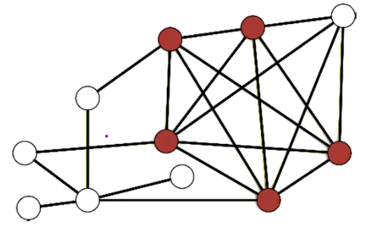
This is in fact also a max clique. To understand why look/Consider each white node. Can any of the white nodes be added? No! none of them would retain the fully connected nature of the the red nodes.
Let's now formalize the Clique problem structure:
- Input: G=(V,E) & goal g
- Output: S ⊂ V
where S is a clique of size |S| ≥ g where one exists
- No otherwise
- Theorem: Clique Problem is NP-Complete
Part 1 Clique problem is in NP
Suppose we're given a proposed solution to Clique, ie we're given input
(G, g) ∈ S
- First
- we can check each edge in S: ∀x, y ∈ S check that (x, y) ∈ E
- This will take us O(n2) time
- Second
- we check that |S| ≥ g
- This is rather straight forward and will take O(n) time
- Together this will take poly-time to verify the correctness of S. This proves that Clique is in NP
Part 2 Clique problem is as hard as every problem in
NP
To prove this claim we will take a known NP-Complete problem and show
that there is a reduction to the Clique problem. So far we've looked at
and proven 3 NP-Complete problems. SAT, 3SAT, and IS. So these will be
our only options which one will we choose? Since Clique is by nature a
graph problem it stands to reason that IS will be the simplest to use in
our reduction.
Let's sketch out the differences between the two to better understand how we might perform a reduction. A Clique is a maximal set where every vertex is connected to every other vertex. IS is also a maximal set, but one where there are absolutely no edges between the vertices. In a way they are like complete opposites of one another. So we will look at the opposite of the Graph G for the IS problem.
For a graph G=(V,E) Let's define the opposite as Ḡ = (V, Ē), we can think of this as the complement of the original graph. It doesn't make sense to take the complete of the vertices so we leave these alone. The Complement of the edges are the set of all edges between two vertices that are NOT in E. ie $\bar{E}=\(x,y):(x,y)\not\in E $. Armed with these new constructions we can formalize the notion of oppositeness.
Observation: S is a clique in Ḡ ⇔ S is an independent set (IS) in G. It's important to note that this an observation that stems from the fact that edges in Ē cannot be in E. It simply follows, or is a consequence of being a complement. (x, y) ∉ E is basically a definition of an independent set S. if there's no edges connecting two vertices then the complement is the edge that connects them. Given this observation it should now be straight forward to show a reduction from $IS \rightarrow Clique $
Reduction
Given the input G=(V,E) and a goal g for the IS problem
- Let Ḡ and g be the input to the clique problem
- Now apply the clique algo as a black box
- if we get a solution S to our input then S is also a solution to IS in G with a size at least g
- else if clique returns no then a solution doesn't exist for IS
This completes our reduction. Putting both parts together shows that Clique is NP-Complete.
Finally, we move towards our last example. Vertex covers
VC Vertex Cover
Definition: For an undirected graph G=(V,E) S ⊂ V is vertex cover if S
"covers every edge".
Alt Define: For an undirected graph G=(V,E) S ⊂ V is vertex cover if S
includes one endpoint of every edge
Formally: For every (x, y) ∈ E either
x ∈ S and/or y ∈ S
Consider the below image. At least one endpoint of each edge is included, both endpoints can be included but this is not required by the definition. Obviously there is the trivial case of simply including all vertices. So as you can imagine we will generally be searching for a minimum vertex cover
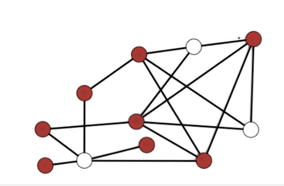
Problem Structure
- Input: undirected G=(V,E) & budget b
- Output: Vertex cover of S of size |S| ≤ b if one exists
- No otherwise
Claim Vertex Cover problem is NP complete.
Part A: VC in NP
Given an input to VC, (G,b), and a proposed solution S, can we verify
that S is a VC with size at most b in polytime?
First we verify that for each edge in E one of it's endpoints are in S. ie ∀(x, y) ∈ E; x ∈ S or y ∈ S. This should take O(n + m). Then we check that |S| ≤ b, which takes O(n) time. Together these imply a ploynomial runtime so VC is in NP and required.
Part B: VC is at least as hard as any problem in
NP
As per our usual approach we want to choose a known problem in NP that
we can use to perform a reduction. Because VC is a graph problem it
makes the most sense to choose either IS or Clique. Since these are
quite similar it shouldn't make much of a difference.
We choose IS and proceed to construct our reduction: IS → VC. Take another look at the example of the vertex cover just above. Notice anything? Hint: Focus on the white nodes. You may notice that they form an independent set. Not maximal by any means but independent nonetheless.
Here's our example graph again, but this time the nodes painted red form a minimal vertex cover.
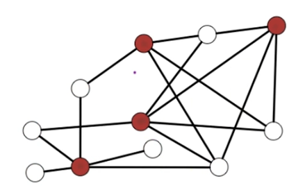
Again we see the white nodes forming an independent set.I'm sure you're beginning to pick up on where this is going.
Claim S is a Vertex Cover ⇔ S̄ is an independent set. Once we prove this claim the reduction of IS to VC will be much simpler. The proof of the claim is rather straight forward.
⟹ Take a vertex cover S. Then for each edge (x,y) in E at least 1 endpoint is in S. Thus at most one endpoint is in S̄. If at most one endpoint is in S̄ then there cannot be any edges in S̄. This means that S̄ is an independent set.
⟸ take an IS set S̄ then S̄ cannot contain any edges. This means that every vertex in S̄ is an endpoint. ie for all edges (x, y) ∈ E only one can be in S̄. Thus S will contain the complementing endpoint. In fact S contains ≥ 1 edge endpoint for each edge. thus S covers every edge in S and is therefore a vertex cover
This completes the proof of the claim and we can move on to the reduction.
Proof: IS → VC
Suppose we're given G=(V,E) and g for an Independent Set problem
- Let b=n-g
- Run vertex cover on G,b
From our claim we know that: G has VC of size ≤ n − g ⇔ G has an IS of size ≥ g.
Given a solution S for VC we return S̄ as a solution to IS. If there no
solution for VC there likewise there is no solution to IS problem
This completes the reduction and proves it's reduction
Travelling Salesman Problem
from Youtube (https://www.youtube.com/watch?v=0sQ37m3whP4&list=PLQfaHkBRINsxngvO_CIM74kUauPd-BGa3)
Problem Formulation
Given a graph G=(V,E) and vertices v1 and vn in that
graph, what is the minimum weight path from v1 to vn that visits
every vertex exactly once.
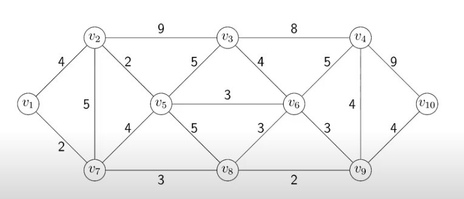
Problems
- DPV 8.4 NP Completeness Erro
- DPV 8.10 Proof by Generalization (Known → New)
- DPV 8.14 Clique +IS
- DPV 8.19 Kite
There are basically two styles/approaches to NP Completeness reductions: (Known → New)
Summary
Method 1: Generalization
In this approach we show that the NEW problem is a generalization of a
known problem. The clique proof was a perfect example of this since we
showed that Clique was just a modified reflection of the IS problem. VC
was also of this flavour
Method 2: Gadget proof
The proof of 3SAT followed this style. In this approach we take the
inputs to the known problem and add some structure, possibly new, to
make it fit the new problem. In the 3SAT proof we created new variables
that allowed us to restructure a SAT input with arbitrarily sized
clauses into a 3SAT problem with clauses of size at most 3.
DPV chapter exercises
DPV chapter exercises (exact, from the textbook)
Exact end-of-chapter exercises, parsed from the DPV chapter PDFs.
DPV Ch 8 — Np Complete Problems — open exercises · chapter PDF
Agent hint
NP-hardness proof → reduce FROM a known NP-hard problem (usually 3-SAT) TO the target; give both directions + poly-time. Catalog above lists the standard chain (IS ↔︎ VC ↔︎ Clique).